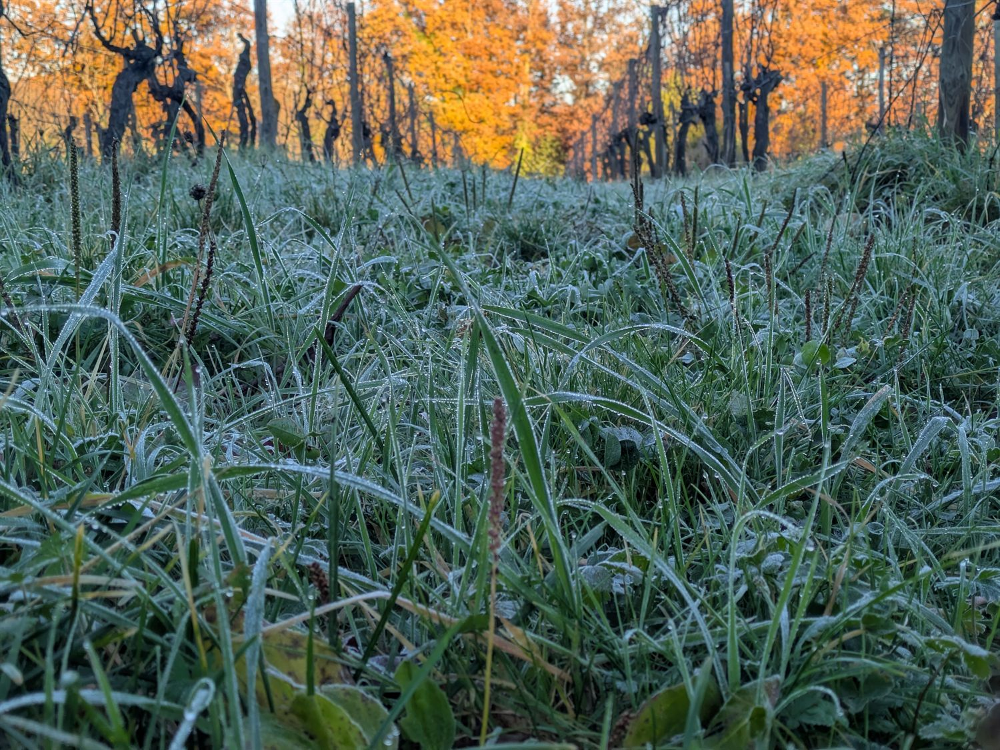

La scelta
Ogni anno viene individuato un piccolo produttore artigianale e una singola vigna che, in quell'annata, ha espresso qualcosa di irripetibile.
Message in a'mpolla
Questi sono gli ingredienti del progetto Silicious. Ogni anno scegliamo una vigna che sia stata protagonista di un'annata speciale, una grande annata. Il suo vignaiolo la vinificherà separatamente e 60 litri verranno affinati nell'ampolla per un anno. Dall'ampolla verranno imbottigliate circa 40 magnum che dopo tre anni verranno vendute a un'asta. Il ricavato servirà a finanziare un intervento virtuoso su quella stessa terra, scelto insieme all'azienda che ha ospitato l'ampolla.

Il ciclo
Cambia il luogo, ma non il principio: valorizzare una vigna, un territorio, una varietà e un vignaiolo, mettendo in bottiglia solo l'essenziale.
Ogni anno viene individuato un piccolo produttore artigianale e una singola vigna che, in quell'annata, ha espresso qualcosa di irripetibile.
La vinificazione segue i protocolli dell'azienda ospite. L'affinamento avviene invece nell'ampolla di vetro da 60 litri, che resta un anno in cantina.
Il vino viene imbottigliato direttamente e senza filtrazione in magnum: una resta alla cantina ospitante, le altre sono custodite dall'Associazione fino all'apertura.
Dopo almeno tre anni una magnum viene stappata per la degustazione collettiva, le altre battute all'asta. Il ricavato finanzia un progetto sul territorio.
Il tempo che scorre
Il tempo è la materia prima del progetto. Qui si vede, giorno per giorno, a che punto è ogni Messaggio.
Archivio
Ogni Messaggio è un atto di memoria e di restituzione: dal vino alla terra, dalla terra alla comunità.